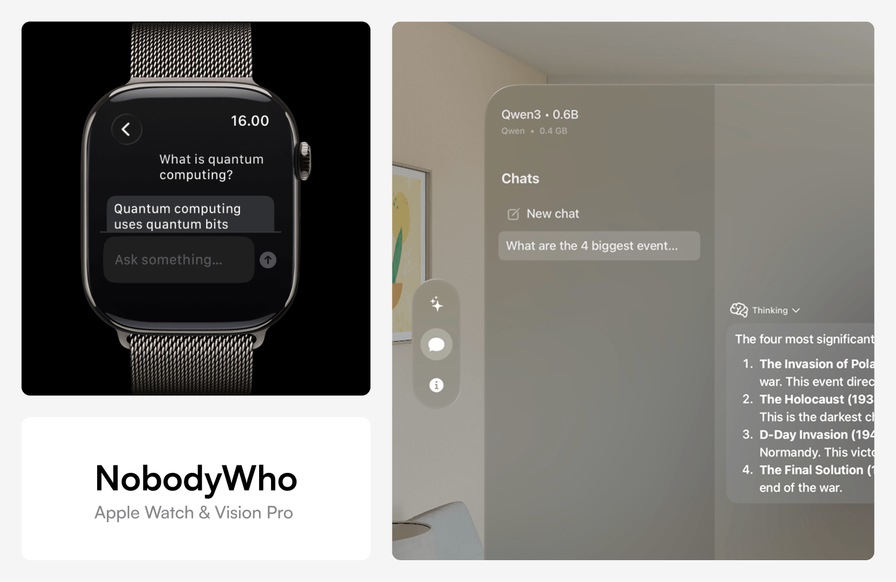

Local by architecture
Prompts and responses remain on the device running the software.
Local intelligence, clearly operated
NobodyWho turns compatible open models into dependable product capabilities for text, speech, vision, embeddings, tools, and RAG.

Cloud AI sends data away. NobodyWho brings the model into the product.
Prompts and responses remain on the device running the software.
The runtime is licensed under EUPL-1.2 and developed in public.
Build with text, speech, vision, embeddings, reranking, tools, and RAG.
Use bindings for Python, Swift, Kotlin, Flutter, React Native, and Godot.
Built in Copenhagen
NobodyWho is built for teams that want useful AI features without giving up control of data, infrastructure, or product behavior.
The project is licensed under EUPL-1.2 and welcomes work across platforms, model types, and device classes.